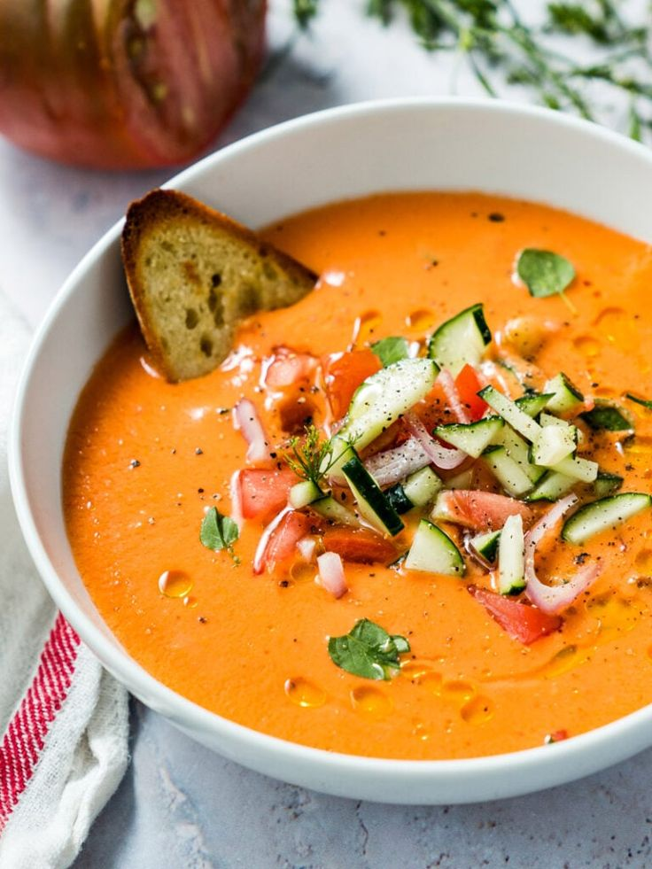

Paella
Paella
- Paella es un plato de arroz originario de Valencia, cocido tradicionalmente en una sartén
ancha y poco profunda. Combina arroz, azafrán, verduras y proteínas como mariscos (gambas,
mejillones, calamares) o carnes como pollo y conejo. El azafrán le da al plato su característico color
dorado y sabor intenso
También conocida como Tortilla de Patatas, es una tortilla gruesa hecha de huevos,
patatas finamente cortadas y, a veces, cebollas. Se cocina a fuego lento hasta que esté dorada y se puede
servir caliente o a temperatura ambiente, comúnmente disfrutada como tapa o comida ligera.
 Tortilla Española
Tortilla Española
Gazpacho
Gazpacho es una sopa fría y refrescante hecha principalmente de tomates, pepinos,
pimientos, ajo, cebollas y pan duro. Este plato, que se sirve frío, es un alimento básico de la cocina
andaluza y es ideal para refrescarse en los días de calor.
Jamón Ibérico es un tipo de jamón curado, considerado una delicadeza en España,
elaborado con cerdos ibéricos que suelen alimentarse de bellotas. Tiene un sabor profundo y a nuez con
una textura tierna y fundente, y se sirve comúnmente en finas lonchas como aperitivo.
 Jamón Ibérico
Jamón Ibérico
 Patatas Bravas
Patatas Bravas
Patatas Bravas son trozos de patata crujientes y dorados, acompañados de una salsa
picante a base de tomate y, a veces, alioli. Esta popular tapa es conocida por sus sabores intensos y
ahumados y niveles variables de picante, según la región y la preparación.